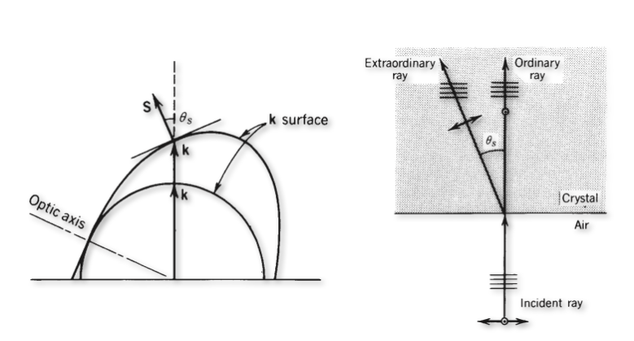
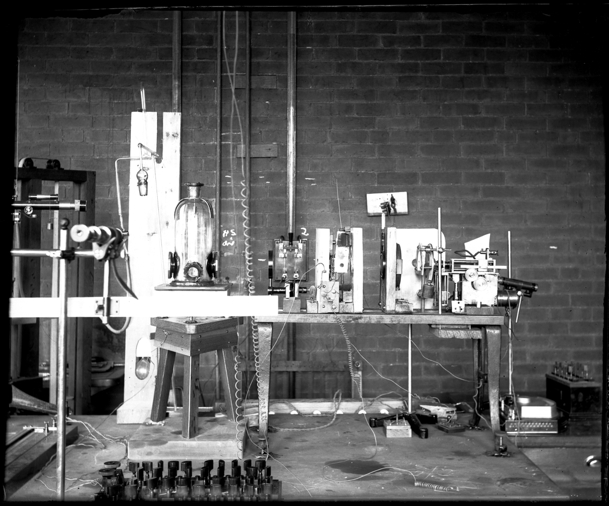
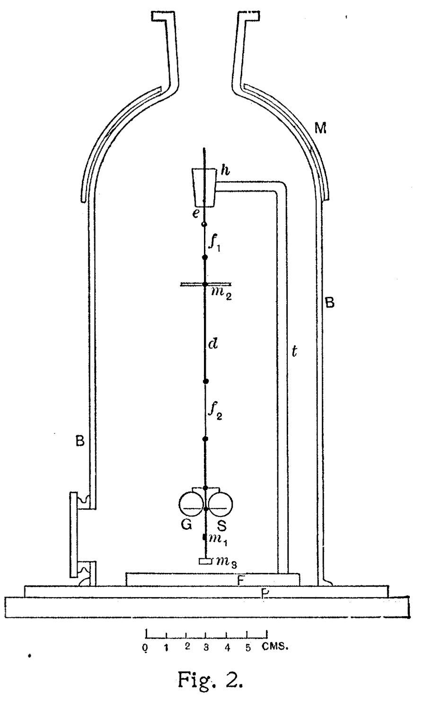

Energy Transport and Momentum Transport of EM Waves
Energy Transport
A characteristic property of waves is that they transport energy rather than mass. It is this energy which we typically detect with the help of a photodetector and not the electric field. We therefore need a quantity that describes this energy transport. From electrostatics, we know that that the energy density of the electric field is given by \(w_e=\frac{1}{2}\epsilon_0 \vec{E}\cdot\vec{E}\). This was the energy needed to assemble a collection of charges at a place. The energy density of the magnetic field is given by \(w_m=\frac{1}{\mu_0}\vec{B}\cdot\vec{B}\).
To obtain such a quantity we recall the energy density of the electric and magnetic field which in sum give
\[\begin{eqnarray} w=w_e+w_m=\frac{1}{2}\epsilon_0 \vec{E}\cdot\vec{E}+\frac{1}{\mu_0}\vec{B}\cdot\vec{B} \end{eqnarray}\]
Using the relation between the electric and the magnetic field amplitude we can further simplify the above expression for electromagnetic waves to \(w=\epsilon_0 E^2\), but we will keep the full expression in the following.
Let’s assume that we look at a volume \(V\) in which we have an electromagnetic wave, then the change in the energy inside that volume with time is given by
\[ \frac{dW}{dt}=\int \frac{dw}{dt}dV \]
the integral over the time derivate of the energy density \(w\). Applying energy conservation, the loss of energy in our volume must be due to some energy flow out of the volume that is described by a quantity \(\vec{S}\) that is describing that energy current density. If we consider a spherical surface without loss of generality, then the integrated energy flux through the surface should amount for the loss of energy in the volume, i.e.
\[ \int \frac{dw}{dt}dV=-\oint_A \vec{S}\cdot \vec{n}da \]
where \(\vec{n}\) is a unit vector normal to the outside of the surface. The integral on the right side is running over the whole surface of our volume. Note that the minus sign on the right side occurs due to the fact that the volume is loosing energy. We may now apply Gauss’ theorem and convert the surface integral on the right side by a volume integral over the divergence of the energy current density \(\vec{S}\), i.e.
\[ \oint_A \vec{S}\cdot \vec{n}da=\int \nabla \cdot\vec{S}dV=-\int \frac{dw}{dt}dV \]
We thus obtain the continuity equation
\[ \frac{dw}{dt}=-\nabla \cdot\vec{S} \]
under vacuum conditions, meaning that we have no free charges and no charge current density.
We may use this equation to calculate the energy current density \(\vec{S}\) by the time derivative of our energy density of the electromagnetic wave.
\[ \frac{\partial w}{\partial t}=\epsilon_0 \vec{E}\frac{\partial \vec{E}}{\partial t} + \frac{1}{\mu_0}\vec{B}\frac{\partial \vec{B}}{\partial t} \label{eq:ed}\tag{ED} \]
We may simplify that expression with the help of Maxwell’s euqations
\[\begin{eqnarray} \frac{\partial \vec{B}}{\partial t}=-\nabla \times \vec{E}\\ \frac{\partial \vec{E}}{\partial t}=\frac{1}{\mu_0\epsilon_0}\nabla \times \vec{B} \end{eqnarray}\]
and the \(\vec{H}=\vec{B}/\mu_0\) relating the magnetic field \(\vec{H}\) to the magnetic flux density \(\vec{B}\). Inserting this in eq. \(\ref{eq:ed}\), we find
\[ \frac{dw}{dt}=\vec{E}(\nabla\times \vec{H})-\vec{H}(\nabla \times \vec{E}) \]
Using the vector identity
\[ \nabla\cdot (\vec{H}\times \vec{E})=\vec{E}(\nabla\times \vec{H})-\vec{H}(\nabla \times \vec{E}) \]
we find
\[ \frac{dw}{dt}=\nabla(\vec{H}\times \vec{E}) =- \nabla(\vec{E}\times \vec{H})=-\nabla \cdot \vec{S} \]
which is valid for vacuum and our energy current density can be identified as
\[ \vec{S}=\vec{E}\times \vec{H} \tag{Poynting Vector} \]
The vector \(\vec{S}\) is called the Poyning vector and describes the energy transport of an electromagnetic wave. The equation \(\frac{dw}{dt}+\nabla \cdot \vec{S}=0\) can be also generalized to a situation where charge current densities \(\vec{j}\) are present. In this case we have to include in our consideration the work done by the electric field on the charge current density, which is \(\vec{E}\cdot\vec{j}\)
\[ \frac{dw}{dt}+\nabla \cdot \vec{S}=\vec{E}\cdot\vec{j} \tag{Poynting theorem} \]
This equation is known as Poynting theorem and just a way of writing energy conservation.
Let’s have a closer look at the Poynting vector, which we can write with the help of the magnetic flux density \(\vec{B}\) as
\[ \vec{S}=\epsilon_0c^2(\vec{E}\times \vec{B}) \]
The magnitude of the Poynting vector is then given by
\[\begin{eqnarray} S=|\vec{S}|&=&\epsilon_0c^2|\vec{E}||\vec{B}|\\ &=&\epsilon_0 c E^2=I \end{eqnarray}\]
which is the same as the intensity. The magnitude of the Poynting vector describes the intensity of an electromagnetic wave or the energy flow through an area. It therefore has the unit of an intensity, which is \(W/m^2\).
If we now have a plane wave
\[ \vec{E}=\vec{E}_0\cos(\omega t -\vec{k}\cdot\vec{r}) \]
in the real value description, then its intensity is
\[ I=I_0\cos^2(\omega t) \]
at a position \(\vec{r}=0\) with \(I_0=c\epsilon_0 E_0^2\). As we commonly calculate the intensity as the time average over one cycle of oscillation, we find for this wave the intensity
\[ \langle I \rangle =I_0\langle\cos^2(\omega t) \rangle =\frac{1}{2}I_0 \]
This is the intensity we would record with the help of a detector and the flow of energy is set by the direction of the Poynting vector. This is not to be confused with the flow of the wavefronts, which go in the direction of the wavevector.
An example where this happens are birefringent materials, where the wavefronts and the Poynting vector are not parallel to each other. In this case the energy flow is not in the direction of the wavefronts. This is a very important concept in optics, as it is the energy flow that is important for the heating of materials and not the direction of the wavefronts.

Momentum Transport and Radiation Pressure
Like the energy of a wave that can be transfered to objects like photodetectors, elecromagnetic waves also transport momentum, which can be turned into a motion of objects, when waves collide with massive objects. The momentum is a property of the electromagnetic wave. We would like to describe that so-called radiation pressure (the flow of momentum through an area) in a very simple way.
For this purpose we need he relativistic energy
\[ W^2=p^2c^2+m^2c^4 \]
which can be calculated from the momentum \(p\), the speed of light \(c\) and the mass \(m\). As lighwaves propagate with the speed of light, they cannot have a mass and the second term ist zero. The momentum of an electromagnetic wave is thus given by its energy devided by the speed of light
\[ p=\frac{W}{c} \]
Therefore the momentum density in a volume must be also equal to the energy density devided by the speed of light.
\[ \frac{dp}{dV}=\frac{1}{c}w=\frac{\epsilon_0 E^2}{c}=\frac{S}{c^2} \]
Therefore the momentum density \(dp/dV\) is directly related to the magnitude of the Poyting vector and the intensity.
The momentum that is therfore transported through an area \(A\) in a time \(dt\) by electromagnetic radiation is given by
\[ \frac{dp}{A c dt}=\frac{S}{c^2} \]
since the volume from which the momentum comes is \(dv=A c dt\). Consequently, the momentum current density (momentum per time and area) is after a slight transformation given by
\[ \frac{1}{A}\frac{dp}{dt}=\frac{S}{c} \]
As \(dp/dt\) can be identified as a force the left side corresponds to a force divided by an area and thus the radiation pressure we are looking for.
\[ p_{\rm rad}=\frac{S}{c} \tag{radiation pressure} \]
So far, this is a hypothetical radiaton pressure, which we relate to the flow of momentum. It becomes a real pressure, if the radiation interacts with some surface.
If we consider a perfectly absorbing surface of area \(A\), then the momentum of the electromagnetic wave is completely transfered to the surface and
\[ p_{\rm rad}=\frac{S}{c} \tag{perfect absorption} \]
is the radiation pressure for perfect absorption.
If we have, however, a perfectly reflecing surface, we transfer due to the reflection, twice the momentum to the wall and therefore teh radiaton pressure for perfect reflection is
\[ p_{\rm rad}=2\frac{S}{c} \tag{perfect reflection} \]
Thus if you want to measure radiation pressure, its best to use reflecting surfaces. This has been done for the first time in an experiment by Nichols and Hull in the years from 1900-1903.
Radiation Pressure measurements


Nichols and Hull mounted therefore the two mirrors on a torsion spring in a geometry much like the Cavendish experiment. The light falling on both mirrors creates tiny forces which elongate the torsionspring which is mounted in a vessel where air is removed. From the elongation one may determine the forces and thus the pressure. From a separate measurement of the absorption and conversion of light into heat (with a Boulometer), one can deermine the intensity or energy contained in the radiation.
Comet Tails

Radiation pressure is also of importance in astronomy and in particular visible in the tail of comets. Comets show tails composed of light gas ions and dust particles which seperate under the influence of radiation pressure. While orbiting around a star, the radiation pressure pushes the ligh gas ions radially away from the star, while the dust particles follow a curved shape ben towards the orbit due to their larger mass. This is also visible in the photograph we took in July 2020 for the comet Neowise which passed earth in a very spectacular way.
Optical Tweezers and Magneto-optical Traps
Radiation pressure has emerged as a crucial tool for manipulating both microscopic particles and atomic species. Figure 3 (left) illustrates optical tweezers, where a tightly focused laser beam traps colloidal particles. While radiation pressure tends to push particles along the beam direction, additional gradient forces arising from the intense light field’s spatial variation maintain the particle’s position in the focal region. This technique has become invaluable in biophysics for:
- Measuring piconewton forces generated by molecular motors
- Studying protein folding mechanisms
- Investigating enzymatic processes such as CRISPR/Cas gene editing
but also for fundamental physics
- like the measurement of the Casimir force
- understanding the interaction of light with matter
- and the measurement of the radiation pressure itself
- or even measuring the Maxwell Boltzmann distribution of single particles
At the atomic scale, radiation pressure combined with magnetic fields enables the trapping and cooling of atoms to temperatures of a few millikelvin in Magneto-Optical Traps (MOTs). Through additional cooling mechanisms, these atomic gases can reach even lower temperatures where they transition into a quantum state known as a Bose-Einstein condensate. This process relies on precise control of atomic hyperfine transitions.
These atomic trapping techniques form the foundation of modern atomic clocks, essential for GPS navigation and gravitational wave detection. Figure 5 shows a fountain atomic clock design, where laser-cooled atoms are propelled upward through a microwave cavity by radiation pressure. Here, the atoms’ hyperfine energy levels interact with the microwave field.
In their fountain-like trajectory, atoms pass through the microwave cavity twice, enabling precise measurements of atomic transition frequencies. These measurements establish a fundamental time reference with unprecedented accuracy, used to synchronize timekeeping systems worldwide.